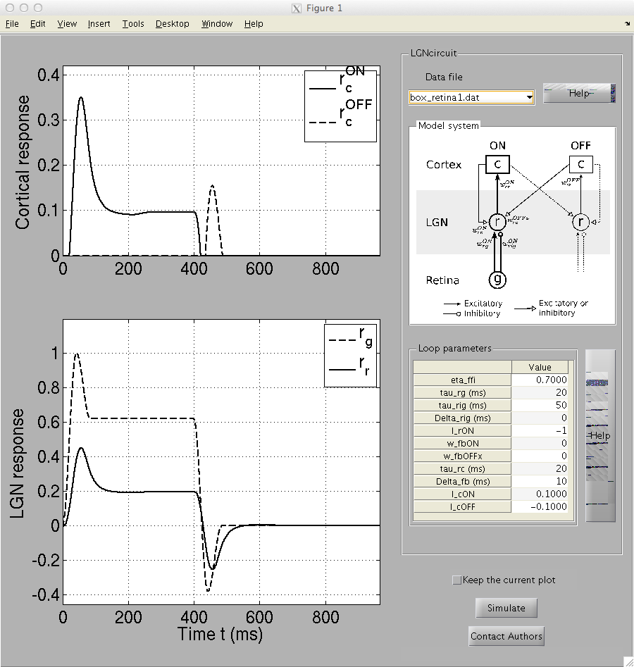

This is the readme for the model associated with the paper: Norheim ES, Wyller J, Nordlie E, Einevoll GT (2012) A minimal mechanistic model for temporal signal processing in the lateral geniculate nucleus. Cogn Neurodyn 6:259-81 This is the code the authors used. The responses of relay cells in the lateral geniculate nucleus (LGN) are shaped by their diverse set of impinging inputs: feedforward synaptic inputs stemming from retina, and feedback inputs stemming from the visual cortex and the thalamic reticular nucleus. This MATLAB model, with an easy-to-use graphical user interface (GUI), explores possible roles of these feedforward and feedback inputs in shaping the temporal part of the receptive fields of LGN relay cells with, so called, ON symmetry. A minimal mechanistic firing-rate model tailored to elucidate salient feedforward and feedback effects is considered including, in particular, feedforward excitation and inhibition (via interneurons) from retinal ON cells and excitatory and inhibitory (via thalamic reticular nucleus cells and interneurons) feedback from cortical ON and OFF cells. Various types of visual stimuli can be explored: flashing spots, impulses, sinusoidal gratings. The model is executed by running LGNcircuit.m. After a short time you should see an image which includes the circuit diagram from Fig. 1:  Please see the help files ipd_help.pdf, ptab_help.pdf in the helpFiles folder for more information.